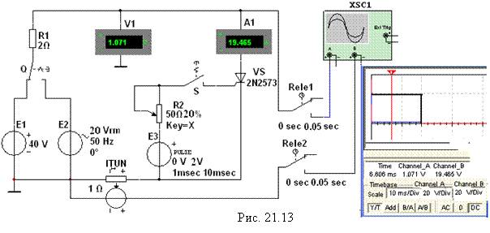
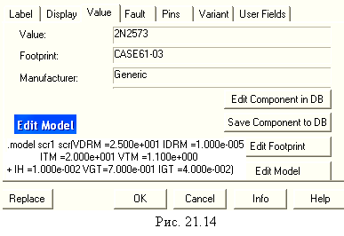
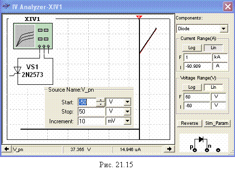
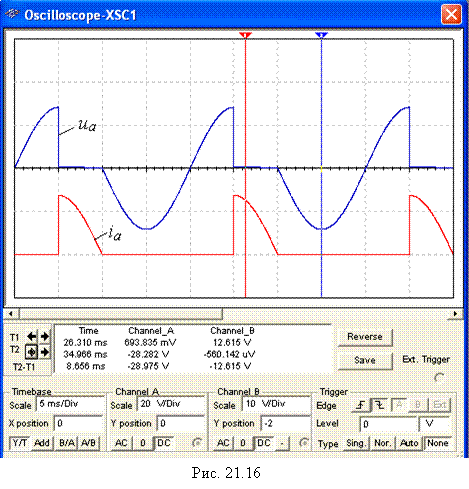

Задание 3. Открыть
схемный файл 21.13.ms10 или собрать
схему испытания тиристора VS типа 2N2573 (рис. 21.13), содержащей, кроме источников
постоянного Е1 и синусоидального Е2 напряжения, генератор Е3 прямоугольных импульсов с
регулируемым временем задержки (Delay Time) импульсов tз,
длительностью импульсов (Pulse Width) (задана длительность tи = 1 мс)
и периодом (Period) Т (задан
период Т = 10 мс); датчик тока INUT
(источник напряжения, управляемый током: при коэффициенте передачи INUT k = 1 Ом значение выходного напряжения в вольтах
равно значению тока в амперах; например, значение напряжения 19,465 В (Chanel_B, см. рис. 21.13, справа) равно значению
протекающего через тиристор тока 19,465 А, а напряжение на открытом тиристоре
(Chanel_А) Uа = 1,071 В); два реле времени Rele1 и Rele2 (два переключателя с программируемым временем
переключения для задания задержки (0 sec) и
продолжительности (0,05 sec) вывода
результатов моделирования (осциллограмм) на экран осциллографа XSC1); резистор R1 c сопротивлением 2 Ом, ограничивающем ток
открытого тиристора, и потенциометр R2 для задания тока отпирания тиристора.
Значения параметров номинированного тиристора VS
типа 2N2573
приведены в окне (рис. 21.14), где:
• VDRM = 2.5e+1 (напряжение отпирания Uот = 25 B);
• IDRM = 1e-5 (обратный ток I0 = 10 мкА);
• ITM = 2e+1
(допустимый ток анода Ia.max =
• VTM = 1.1e+0 (напряжение на открытом тиристоре Uпр = 1,1 B);
• IH = 1e-2 (ток удержания Iуд = 10 мА);
• VGT = 7e-1 (управляющее напряжение Uу = 0,7 В на открытом тиристоре);
• IGT = 4e-2 (ток управляющего электрода Iу = 40 мА).
При определении напряжения отпирания динистора (тиристора VS при напряжении Uу = 0) нужно принять ЭДС Е1 = 40…50 В. Из анализа ВАХ данной модели динистора (рис. 21.15), снятой с помощью прибора XIV1, следует, что напряжение отпирания динистора Uоm » 37,4 В, хотя в паспортных данных этой модели указано Uот = 25 B.

Скопировать изображение схемы (рис.
21.13) на страницу отчёта.
Установить
переключатель Q (см. рис.
21.13) в правое положение, замкнуть
ключ S, последовательно задавать
время задержки tз = 1; 4 и 7 мс импульсов управления Uу генератора Е3
и зарисовать (или скопировать) на страницу отчёта
осциллограммы напряжения uа и тока iа тиристора.

В качестве примера на рис. 21.16 приведены осциллограммы напряжения uа и тока iа
тиристора при времени задержки управляющего импульса tз = 5 мс (угле
отпирания a
= 90°) по отношению к началу нарастания анодного
синусоидального напряжения с периодом Т
= 20 мс. Выведенные в среднем окне цифры (ниже осциллограмм напряжения и
тока на рис. 21.16) есть координаты точек осциллограмм, в которых их пересекают
визирные линии. Кнопки и поля, расположенные внизу окна осциллограмм, предназначены
для выбора режимов работы каналов А
и В ввода сигналов, смещения
графиков кривых зависимостей по осям Х
и Y, а также масштабов как горизонтальной развёртки лучей, так
и усиления входных сигналов.

Примечание.
При измерении виртуальными приборами среды МS10 несинусоидальных величин, коими являются напряжение и ток
тиристора при угле отпирания a ¹ 0, следует иметь в виду,
что их показания в режиме АС будут
приближенными, так как эти приборы смоделированы на измерение действующих
значений синусоидальных величин.